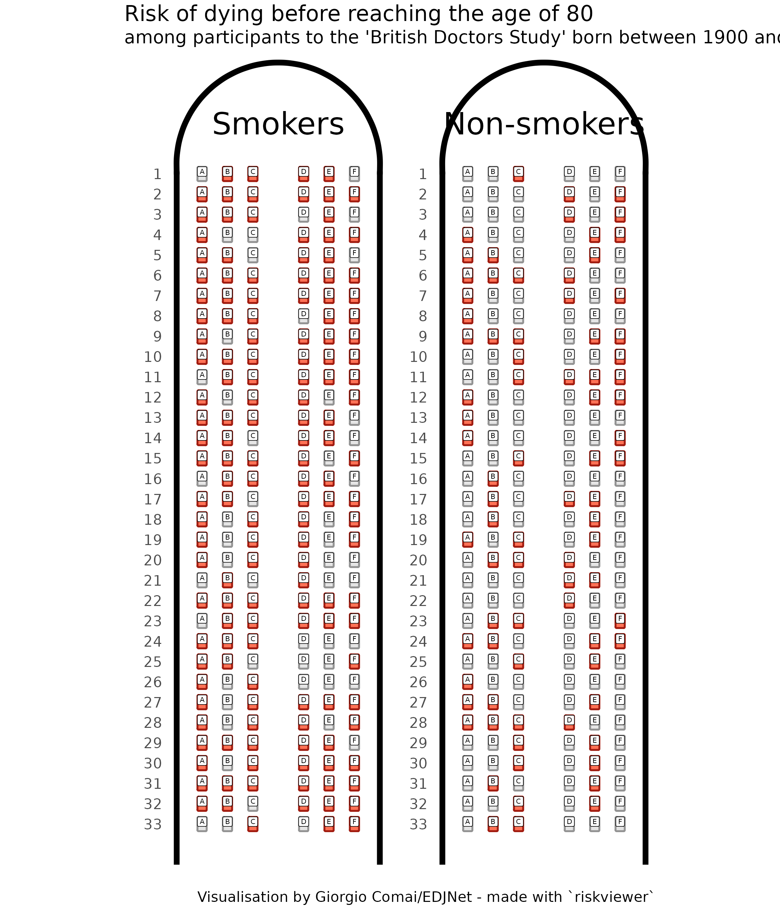
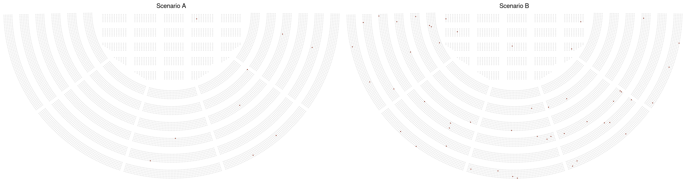

Visualising risk: a modern implementation of the Risk Characterisation Theatre
Source:vignettes/introduction.Rmd
introduction.RmdIn their 2007 book “The illusion of certainty: Health Benefits and Risks”, authors Erik Rifkin and Edward Bouwer addressed a number of aspects related to the communication of risk to individuals and broad audiences, arguing that adequate communication of risk, including on the uncertainty embedded in risk assessments, is fundamental to personal and collective deliberations.
The book presents a number of interesting concepts (I suggest reading the whole book, or go through some book reviews that summarise some of its key points, e.g. this book review on CMAJ, the Canadian Medical Association Journal or this one on the Cambridge Quarterly of Healthcare Ethics), but in this post I will focus specifically on a type of visualisation proposed by its authors: the risk characterisation theatre. The core idea is to take a seating chart, such as the ones used for booking a place in a theatre, and obscuring a share of seats corresponding to the risk. Here is an image from their book, as re-published by CMAJ.
Rofecoxib (Vioxx) risk characterisation theatre. The 16 darkened seats represent the number of additional people who will experience cardiovascular events when taking rofecoxib, as compared to the 1 000 individuals not taking this anti-inflammatory over a 9-month period. Merck & Co. pulled rofecoxib off the market on Sept. 30, 2004, due to increased risk of heart attack and stroke. Photo by: E. Rifkin and E. Bouwer
Knowing that this theatre has 1 000 seats, we get an idea of how common the given adverse effect is. The visualisation is particularly effective when two or more graphs are placed next to each other, one showing baseline risk, the other the effect of treatment, or comparing different risk scenarios.
This visualisation makes it possible to show relatively rare risks that are often difficult to represent (anything smaller than a couple percentage points would look negligible, e.g., in a pie chart, but there’s a big difference between a 2 per cent risk and a 0.02 per cent risk), allows to associate a risk with a quantity and context that a person can instinctively relate to, and by not giving prominence to exact figures, it implicitly deals with the big issue of uncertainty in risk.
Overall, I feel there are clear merits for this type of visualisations, and surely enough merit to deserve a modern graphical implementation of this technique enabling its wider adoption, be it among medical professionals or data journalists.
Before moving on to more examples and introducing our own implementation of this concept, I will state the obvious: this visualisation is effective in some cases, but not so much in others; sometimes, we do have a very high degree of certainty in a given data point; getting familiar with research data may be useful, but context remains fundamental and consultation with professionals may be necessary for a better interpretation of risk statististics (indeed, the book is at least partly addressed to doctors seeking to present risk to their own patients during such consultations).
A modern visual implementation of the risk characterisation theatre
Solutions that share some of the features of the risk characterisation theatre designed by Rifkin and Bouwer are not unseen in data visualisation. For example, when showing the impact of “long Covid” according to a recent study, the data team at The Economist showed the frequency of different symptoms by changing the shade of the relevant share of dots out of a bunch of 100 dots: this shows relative and absolute numbers, but somehow lacks the natural association with a real world scenario that defines the risk characterisation theatre. Instead of showing a bunch of dots, for example, they could have shown them as places in a bus: if you imagine a typical bus with 50 places, then a figure such as “22 per cent of patients discharged from hospital after covid-19 reported hair loss” could be depicted as 11 individuals on a bus full of people who have left hospital after receiving care for covid-19: a situation that can easily be imagined by anyone familiar with a bus. The data become immediately less abstract.
To facilitate producing this kind of graph, I have created a package for the R programming language, riskviewer. It currently offers two basic scenarios:
- one based on a typical configuration of many airplanes common in European routes such as the Airbus A320 or the Boeing 737, with about 30 rows, 6 seats per row, and close to two hundreds seats in total.
- one inspired by the Verona Arena, a Roman amphitheatre still used for performances and concerts (here is the official seating chart); in my implementation (not an accurate replica), the Arena has approximately 10 000 seating places;
Both settings should be relatively familiar to many in Europe, or at least it should be easy for them to visually imagine the size of the crowd involved. I see the advantage of choosing seating charts of smaller size (such as buses), but it is not uncommon to be in the position to represent relatively rare risks, whereby larger seat charts can be more useful.
Let’s start from one of the examples Rifin and Bouwer outline in their book: the British Doctors Study, a 50 years long study that ran from 1951 to 2001 and determined the increased risk of lung cancer associated with smoking tobacco.
There are many ways to present these data, and many data points that outline, for example, the relative benefits for those who quit smoking earlier. But let’s just look at one of the most blunt data points: the number of people who lived from age 35 through age 80. Among smokers, 74 per cent died before reaching the age of 80, compared to 41 per cent of the non-smokers (figures relate to people born in the first decade of the last century).
# remotes::install_github("EDJNet/riskviewer")
library("riskviewer")
library("patchwork")
plane_1 <- rv_create_airplane(risk_ratio = 0.74,
rows = 33,
title = "Smokers",
font_family = "Roboto Condensed",
font_family_seats = "Roboto Mono")
plane_2 <- rv_create_airplane(risk_ratio = 0.41,
rows = 33,
title = "Non-smokers",
font_family = "Roboto Condensed",
font_family_seats = "Roboto Mono")
plane_1 + plane_2 + plot_annotation(
title = paste("Risk of dying before reaching the age of 80"),
subtitle = paste("among participants to the", sQuote("British Doctors Study"), "born between 1900 and 1910"),
caption = 'Visualisation by Giorgio Comai/EDJNet - made with `riskviewer`',
theme = ggplot2::theme(
title = ggplot2::element_text(
size = 20,
family = "Roboto Condensed"),
text = ggplot2::element_text(
family = "Roboto Condensed")
)
)
For people born in the early 20th century, it was not uncommon to die before reaching the age of 80, as it appears by looking at the “non-smokers” airplane. There are also quite a few people who smoked all their life and happily reached the age of 80, as appears from looking at the “smokers” flight. But the difference among the two airplanes is still striking, and the metaphor here is perfectly fitting: by smoking (or not smoking) you choose which plane you board on.
The Economist’s covid-19 risk estimator
Last month, the data team at The Economist published a characteristically excellent interactive visualisation that allows to estimate the risk of hospitalisation and death for people diagnosed with covid-19 in the United States, based on age, sex, and underlying medical conditions. Do check out their risk estimator for more details.
How would the same data look when presented with our riskviewer? For the sake of simplicity, I will not include any comorbidity, and just present the risk of hospitalisation and death for otherwise healthy individuals.
What is the risk, for example, for a healthy man and a healthy woman aged 65 diagnosed with covid-19 in the United States?
plane_1 <- tibble::tribble(~Risk, ~Ratio,
"Hospitalisation", 0.122,
"Death", 0.016) %>%
rv_create_airplane(rows = 33,
title = "Female",
font_family = "Roboto Condensed",
font_family_seats = "Roboto Mono",
legend_position = "top")
plane_2 <- tibble::tribble(~Risk, ~Ratio,
"Hospitalisation", 0.196,
"Death", 0.028) %>%
rv_create_airplane(rows = 33,
title = "Male",
font_family = "Roboto Condensed",
font_family_seats = "Roboto Mono",
legend_position = "top")
plane_1 + plane_2 +
plot_annotation(
title = paste("Estimated covid-19 risk if diagnosed in the United States at age 65\nwithout other underlying medical conditions"),
subtitle = expression(paste("Based on ", italic("The Economist"), "'s covid-19 risk estimator")),
caption = 'Visualisation by Giorgio Comai/EDJNet - made with `riskviewer`',
theme = ggplot2::theme(
title = ggplot2::element_text(size = 20),
plot.subtitle = ggplot2::element_text(size = 16),
text = ggplot2::element_text(family = "Roboto Condensed"))
) + plot_layout(guides = "collect") &
ggplot2::theme(legend.position='top')
Notice that in this graph there is no number: there is no easy way to say an exact percentage for the relative risk. Does it matter? Does knowing an exact number make my personal risk estimation more or less meaningful than just by looking at this graph? In a risk estimate such as this one there is a lot of uncertainty involved: does knowing that the risk of death for males aged 65 diagnosed with covid-19 according to this approach is estimated at 2.8 per cent make me any wiser about my personal understanding of actual risk? This is a key way in which uncertainty is implicitly embedded in this type of graph.
The graph shows clearly that men are noticeably more at risk than women, that most people in this group will pass covid-19 without need for hospitalisation, but also that the risk of hospitalisation is not so rare. The more you phyisically imagine the actual situation of how many people there are on an airplane, the more you will have internalised how risky this situation is. Not in the abstract, but in real terms.
I will make a few more examples related to covid-19, but before continuing I would like to reiterate two points: this graph shows personal risk, and does not account for the additional risk that can be caused by infecting others. As pointed out in this other piece by The Economist, a large share of those hospitalised for covid-19 still have a variety of symptoms months after hospitalisation.
How to present rarer occurrences
This visualisation based on airplanes makes sense for relatively frequent events, i.e. events with a risk of at least about 1 per cent. In their book, Rifkin and Bouwer show smaller risk by presenting e.g. ten theatres, showing that only once every ten full theatres the risk is likely to occur.
In our case, we will stick to planes, but make them more compact.
Let’s present the same type of information shown in the graph above, but for people who are 20 years younger: aged 45, diagnosed with covid-19 in the United States, with no recorded underlying conditions.
tibble::tribble(~Risk, ~Ratio,
"Hospitalisation", 0.048,
"Death", 0.002) %>%
rv_create_airplane_combo(number_of_planes = 10,
compact = TRUE,
font_family = "Roboto Condensed",
fill = c("darkcyan", "coral1"),
legend_position = "top",
ncol = 5,
nrow = 2,
levels = c("Hospitalisation", "Death")) +
patchwork::plot_annotation(
title = paste("Estimated covid-19 risk if diagnosed in the United States\nfor a male aged 45 without other underlying medical conditions"),
subtitle = expression(paste("Based on ", italic("The Economist"), "'s covid-19 risk estimator")),
caption = 'Visualisation by Giorgio Comai/EDJNet - made with `riskviewer`',
theme = ggplot2::theme(
title = ggplot2::element_text(size = 20),
plot.subtitle = ggplot2::element_text(size = 16),
text = ggplot2::element_text(family = "Roboto Condensed"))
) + plot_layout(guides = "collect") &
ggplot2::theme(legend.position='top',
legend.text = ggplot2::element_text(size = 16))
As appears from the graph, the personal risk of otherwise healthy males aged 45 diagnosed with covid-19 is certainly less scary, but still not quite reassuring. In a crowd corresponding to the number of people fitting on an airplane, the vast majority would not have severe consequences, but we would always have someone who will need to be hospitalised. Every couple of “flights”, we would have one dead. With comorbidities, the graph becomes soon less reassuring.
If as a healthy 45-years old male you want to assess your personal risk, you can picture yourself buying 10 plane tickets with a randomly assigned seat in one of the flights above. How does it feel? The risk will feel different to different people. But again, notice that not knowing the exact percentage associated with a risk does not hinder our capacity to properly assess risk. If anything, this visualisation pushes us to rely on our “natural” risk assessment instincts, reducing the distraction and illusion of certainty that would be associated with something like “there’s a 0.2 per cent risk”.
I feel this kind of visualisation works best when it relates to an active choice and when it shows both the absolute and the relative risk reduction (such as in the case of smoking vs non-smoking, or with a doctor and patient discussing a course of action), but I still think it can be quite powerful in a wider range of cases.
Even smaller risks
Perhaps the main strength of the idea of risk characterisation theatre is to show risk based on a number of individuals that can conceivably be imagined by a person as a sum of individuals, rather than as a crowd or big number such as “one million” that is beyond the human experience. The idea of a risk that is as rare as, e.g., “one in a million” is humanly difficult to conceive.
Would it be possible to present risks of the scale of one in a thousand or even one in ten thousand using the risk characterisation theatre?
Here is an attempt based on an imaginary arena with about 10 000 places. This may be similar in size to some concert venues, and depicts a crowd that many of us have seen gathered together in real life.
graphs <- list(rv_create_arena(ratio = 0.001,
title = "Scenario A",
ggplot = TRUE),
rv_create_arena(ratio = 0.005,
title = "Scenario B",
ggplot = TRUE))
rv_img(plot = graphs, stack = FALSE)
Scenario A represents a risk of one in a thousand, scenario B a risk of 5 in a thousand. The difference is clear, and perhaps we could still show this to people who are less familiar with numbers and help them understand relative risk. You could conceivably use this to illustrate even a risk of one in a million: “imagine an arena with 10 000 people; now, imagine 100 such arenas: one single person in this one hundred arenas will suffer this adverse effect”. Perhaps this kind of narrated data visualisation could be of use in the doctor-patient situation imagined by Rifkin and Bouwer when they first conceived the risk characterisation theatre.
Ultimately, this would eventually be quite similar to the kind of visualisations that data journalists have used online with the scrollytelling format. It may still be more effective than abstract numbers in many cases. But it is already something different: the real strength of the visualisation format outlined in this post is to bring risk assessment to a size we can directly relate to and a measure where our instinctive understandings of risk still work.